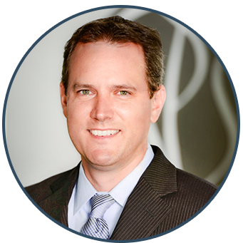

Joanne Dyl
Financial Administrator

Meet your surgeon
A native of Orlando who came home to join the medical community he grew up in. Dr. Newman is proud to be board certified by the American Board of Plastic Surgery.
His goal is a professional, comfortable, informative and individualized experience, and he prides himself on being available, with open communication and the highest level of patient care.
Training
Dr. Newman trained broadly, in every area of plastic surgery, with leaders in the field.
Davidson College in Davidson, North Carolina, where he majored in Biology.
University of South Florida College of Medicine, back home in Florida.
Wake Forest University Baptist Medical Center in Winston-Salem: general surgery and all aspects of plastic surgery, including reconstructive, cosmetic, pediatric reconstruction, hand surgery, microsurgery and endoscopic techniques.
Trained under prominent leaders in plastic surgery, including Dr. Malcolm Marks, Dr. Louis Argenta and Dr. Wayne Meredith.

Meet your physician assistant
Dzi is a board certified physician assistant and a central part of the practice. She earned her Bachelor of Science in Microbiology and Cell Science and her Master’s degree in Physician Assistant Sciences (2000) at the University of Florida.
She began her career at Tampa General Hospital on the Hand and Microsurgery Team, training in hand injuries and disorders, microsurgery, flaps and wound repair. She later worked in a respected North Carolina dermatology practice focused on skin care, medical and surgical dermatology and skin cancer treatment.
Dzi keeps current through continuing education in plastic and reconstructive surgery, dermatologic surgery and cosmetic medicine. She is enthusiastic about the options available to people of all ages and skin types, and helps you achieve and maintain the best outcomes for your skin and decide what is right for you.
Her experience in hand surgery and dermatology complements the care offered in our practice. As a mother of four, she has particular insight into the modern woman’s balance of personal and professional life.
The practice
Although he maintains a successful cosmetic practice, Dr. Newman finds reconstructive surgery very rewarding. He uses tissue expanders and implants, TRAM and latissimus flap techniques for breast reconstruction.
Among his other major interests is skin cancer (melanoma, squamous cell and basal cell carcinoma). He often works with other physicians to reconstruct soft tissue defects.
Dr. Newman attends national and regional meetings to stay abreast of the latest technologies in his field and applies them appropriately. He is a devoted husband and father of four with strong ties to the Orlando community.
Our team
We are proud to introduce the people you will meet at Newman Plastic Surgery. Each has a strong background in the medical field and shares our commitment to your having the best possible experience. Each of them has a heart for patient care.
Financial Administrator
Patient Care Coordinator
Patient Care Coordinator
Lead Medical Assistant
Medical Esthetician / Medical Assistant
Medical Assistant
Medical Assistant
Your story starts with a conversation
A question. A possibility. A new chapter. We’re here when you’re ready.
407.481.9505 444 North Mills AvenueRequest a consultation
You’ve reached the end of the design preview. Nothing has been sent or saved.